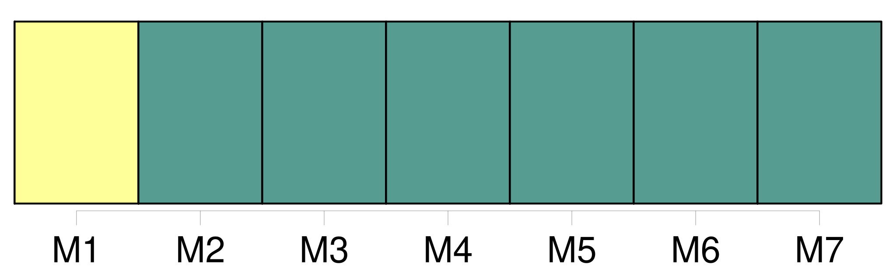
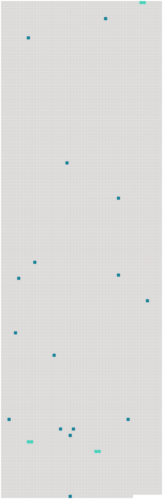

Longueur nb maillons : 19 mentions |
 |
L'inobservation des dispositions des paragraphes précédents n'affecte ni l'existence ni la validité du contrat de transport, qui n'en sera pas moins soumis aux règles de la présente convention, y compris celles qui portent sur la limitation de [la responsabilité] [7 phrases]
Cette disposition ne crée pour le transporteur aucun devoir, obligation ni [responsabilité] [11 phrases]
Article 9 [60 phrases]
Le présent article s'applique à toutes les dispositions de la convention en matière de [responsabilité] , y compris le paragraphe 1 de l'article 21. [14 phrases]
Toutefois, lorsque la destruction, la perte, l'avarie ou le retard d'une partie des marchandises, ou d'un objet qui y est contenu, affecte la valeur d'autres colis couverts par la même lettre de transport aérien ou par le même récépissé ou, en l'absence de ces documents, par les mêmes indications consignées par les autres moyens visés à l'article 4, paragraphe 2, le poids total de ces colis doit être pris en considération pour déterminer la limite de [responsabilité] [22 phrases] Si la révision mentionnée au paragraphe précédent conclut que le coefficient pour inflation a dépassé 10 %, le dépositaire notifie aux États parties une révision des limites de [responsabilité] [6 phrases]
Article 25 [7 phrases]
Si une action est intentée contre un préposé ou un mandataire du transporteur à la suite d'un dommage visé par la présente convention, ce préposé ou mandataire, s'il prouve qu'il a agi dans l'exercice de ses fonctions, pourra se prévaloir des conditions et des limites de [responsabilité] que peut invoquer le transporteur en vertu de la présente convention. [17 phrases]
En ce qui concerne le dommage résultant de la mort ou d'une lésion corporelle subie par un passager, l'action en [responsabilité] peut être intentée devant l'un des tribunaux mentionnés au paragraphe 1 du présent article ou, eu égard aux spécificités du transport aérien, sur le territoire d'un État partie où le passager a sa résidence principale et permanente au moment de l'accident et vers lequel ou à partir duquel le transporteur exploite des services de transport aérien, soit avec ses propres aéronefs, soit avec les aéronefs d'un autre transporteur en vertu d'un accord commercial, et dans lequel ce transporteur mène ses activités de transport aérien à partir de locaux que lui-même ou un autre transporteur avec lequel il a conclu un accord commercial loue ou possède. [15 phrases]
L'action en [responsabilité] doit être intentée, sous peine de déchéance, dans le délai de deux ans à compter de l'arrivée à destination, ou du jour où l'aéronef aurait dû arriver, ou de l'arrêt du transport. [25 phrases]
Article 43 [1 phrases]
Article 45 [1 phrases]
Article 46
Article 47 [2 phrases]
Article 50 [23 phrases]
Le dépositaire notifiera rapidement à tous les signataires et à tous les États parties : |
 |
Il est possible de télécharger la ressource sur la page Ortolang |
Si vous avez des questions ou vous voyez des erreurs, merci d'envoyer un mail à silvia.federzoni89@gmail.com |